| Create a simple ATL transformation | ||
|---|---|---|
|
|
|
|
| Introduction | Updating This Document | |
This tutorial shows you how to create your first simple transformation with ATL, through a well-known basic example: Families2Persons.
Note: This tutorial is followed step by step in the ATL cheatsheet under eclipse : ATL Development > Create a simple ATL transformation. Go to the Help > Cheat Sheets... menu to find it.
The objectives of this tutorial are to perform a transformation from a list of families to a list of persons.
On one side (the source), we have a list of families. Each family has a last name, and contains a father, a mother and a number of sons and daughters (0, 1 or more) all with a first name. We want to transform this list into a new list of persons (the target), this means that each member of the family will be a person, without differentiating parents from children, and with no link between the members of a same family (except a part of their name). In the end, we must only have a person with its full name (first name & last name), male or female.
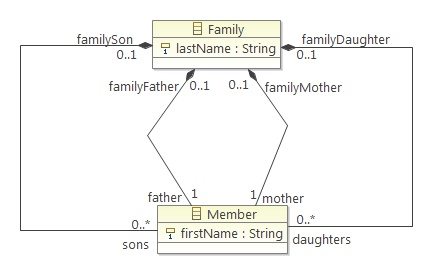
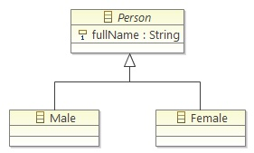
In order to manage to do this, there are a few requirements.
First of all, you will need to install ATL on eclipse. If you already have it installed, just skip this task. Otherwise, follow the few steps bellow:
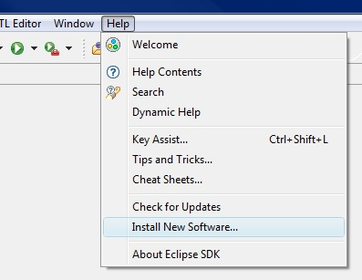
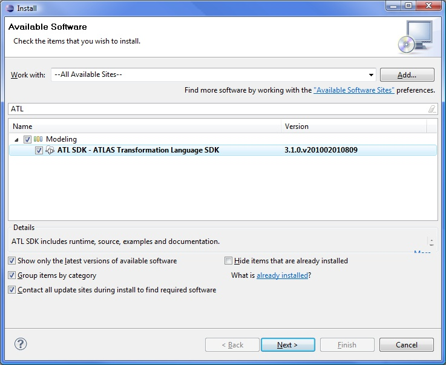
You can check if ATL is installed by going to Help > About Eclipse SDK, then clicking the Installation Details button, and under the Plug-ins tab you should see several lines with ATL.
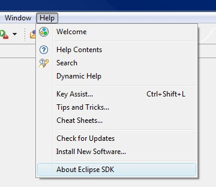
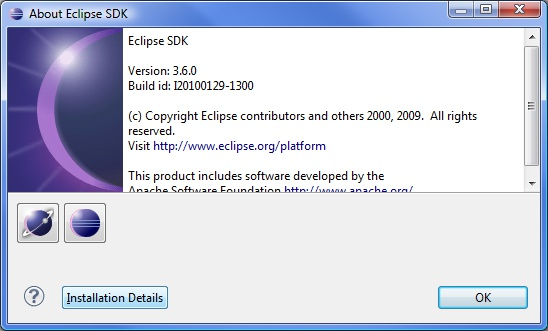
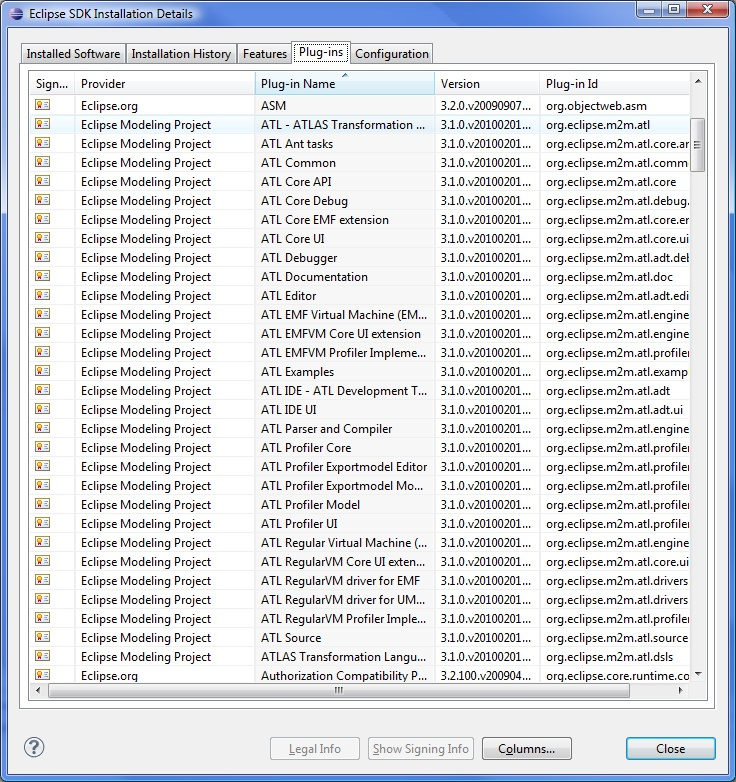
If you have any problem, please refer to the User Guide for further information about ATL installation.
After the theory, let's start creating the project.
To create a new ATL project, you need to go to File > New > Other...
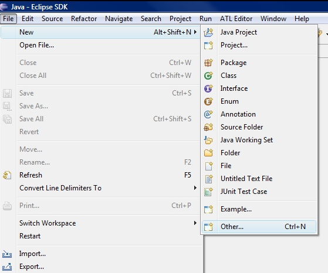
and then select ATL > ATL Project....
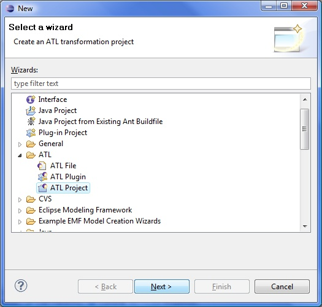
Then, click the Next > button. Type a name for the project (say "Families2Persons" for our example).
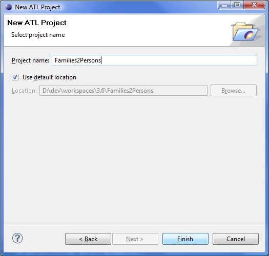
The project should now appear on your projects list.
The User Guide also provides a detailled section for the creation of a new ATL project.
Now that our project is ready to use, we can fill it. Our first files are the representation of a family and a person, that is to say how we want to symbolize then (like a map symbolize the real world). This is called a metamodel, and it corresponds to an Ecore file.
To create the Ecore file, go to File > New > Other..., and then select Eclipse Modeling Framework > Ecore Model and click Next >.
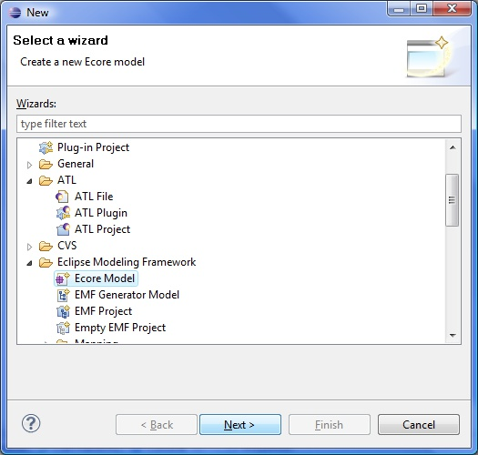
Select your Families2Persons project on the list, enter a name for the file (Families.ecore for instance), and click Finish. An empty file is added to your project. Repeat this task for the Persons.ecore metamodel.
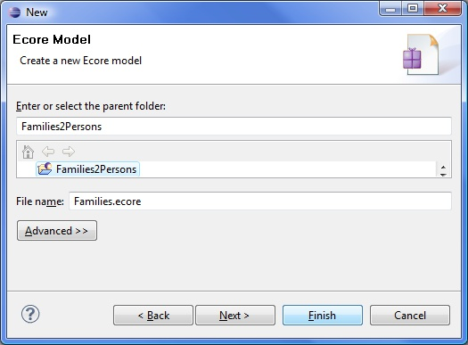
Now we need to fill these files.
(Note that the User Guide shows other metamodels examples.)
As we saw in the Objective part, a family has a last name, and a father, a mother, sons and daughters with a first name. That is what we need to tell to the Families.ecore file.
Open it with the default editor (Sample Ecore Model Editor). We will also need the Properties view, so if it is not already opened, you can show it by going on Window > Show View > Other..., selecting General > Properties and clicking OK.
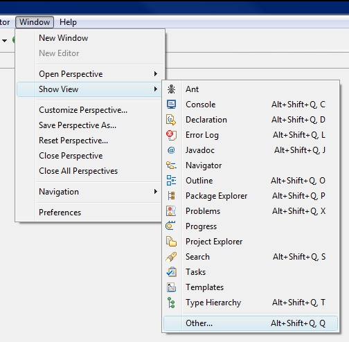
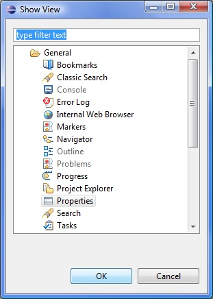
The Families.ecore file comes in the form of a tree. The root should be: "platform:/resource/Families2Persons/Families.ecore". If you expand it, there is a empty node under it.
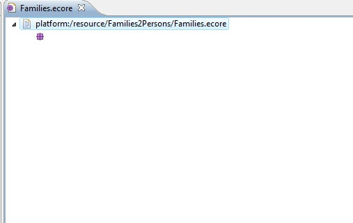
Click on it, and in the Properties view, enter "Families" in the value of the "Name" property. This node is where we are going to put everything that makes a family.
So first we create a class "Family", by right clicking on the Families node, and clicking on New Child > EClass.
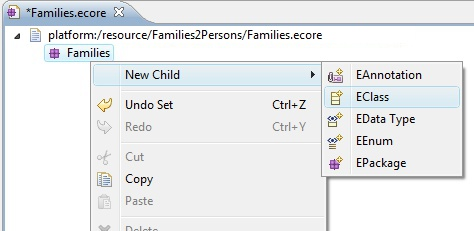
You can name it the same way you named the node Families above.
Then we give it an attribute ( New Child > EAttribute) and name it "lastName".
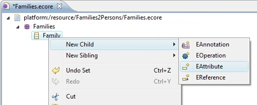
We want to have one and only one last name per family, so we control its multiplicity: set 1 for the lower bound (that should be set to 0 by default), and 1 for the upper bound (that should already be 1). These bounds can be set the same way than the name, but on the Lower Bound and Upper Bound properties. We can specify a type for this attribute, and we want it to be a string. So in the EType property, search for the EString type.
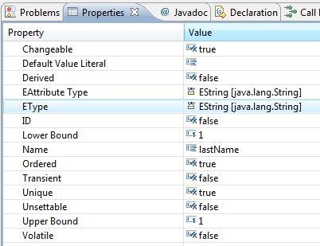
At this moment, we have a family with its last name. Now we need members for this family. Therefore we are going to create another class (as we created the Family class): "Member". This class will be a Families node's child, as the other Family class. These members have a first name, so we add an attribute "firstName" of type EString, and again a member has one and only one first name (see above if you don't remember how to create an attribute, name it, give it a type and change its multiplicity).
Now we have to make the links between the family and the members. In this purpose, you have to create children of the Family of the type EReference. Name these references "father", "mother", "sons" and "daughters". They will have the EType Member. About the multiplicity, we have on father and mother for one family (so upper and lower bounds set to 1), but we can have as many sons and daughters as we want, even 0 (so lower bound set to 0, and upper bound set to -1, which means *). And at last, put their Containment property to true so that they can contain members.
Once these attributes are created and configured, we do the same for the Member class. It also needs references towards the Family class. Just add 4 EReferences to the Member class: "familyFather", "familyMother", "familySon" and "familyDaughter" with EType Family. This time, each reference should have its multiplicity set to 0..1 (it is by default), because a member is either a father, or a mother, or a son, or a daughter, so the reference that is defined for a member shows its role in the family. Then, in order to tell which member refer to which family member, set their EOpposite field to their reference in the Family class (for example, familyFather refers to the father reference of the Family class).
<?xml version="1.0" encoding="ISO-8859-1"?>
<xmi:XMI xmi:version="2.0"
xmlns:xmi="http://www.omg.org/XMI" xmlns:xsi="http://www.w3.org/2001/XMLSchema-instance"
xmlns:ecore="http://www.eclipse.org/emf/2002/Ecore">
<ecore:EPackage name="Families">
<eClassifiers xsi:type="ecore:EClass" name="Family">
<eStructuralFeatures xsi:type="ecore:EAttribute" name="lastName" ordered="false"
unique="false" lowerBound="1" eType="ecore:EDataType http://www.eclipse.org/emf/2002/Ecore#//EString"/>
<eStructuralFeatures xsi:type="ecore:EReference" name="father" ordered="false"
lowerBound="1" eType="#/0/Member" containment="true" eOpposite="#/0/Member/familyFather"/>
<eStructuralFeatures xsi:type="ecore:EReference" name="mother" ordered="false"
lowerBound="1" eType="#/0/Member" containment="true" eOpposite="#/0/Member/familyMother"/>
<eStructuralFeatures xsi:type="ecore:EReference" name="sons" ordered="false"
upperBound="-1" eType="#/0/Member" containment="true" eOpposite="#/0/Member/familySon"/>
<eStructuralFeatures xsi:type="ecore:EReference" name="daughters" ordered="false"
upperBound="-1" eType="#/0/Member" containment="true" eOpposite="#/0/Member/familyDaughter"/>
</eClassifiers>
<eClassifiers xsi:type="ecore:EClass" name="Member">
<eStructuralFeatures xsi:type="ecore:EAttribute" name="firstName" ordered="false"
unique="false" lowerBound="1" eType="ecore:EDataType http://www.eclipse.org/emf/2002/Ecore#//EString"/>
<eStructuralFeatures xsi:type="ecore:EReference" name="familyFather" ordered="false"
eType="#/0/Family" eOpposite="#/0/Family/father"/>
<eStructuralFeatures xsi:type="ecore:EReference" name="familyMother" ordered="false"
eType="#/0/Family" eOpposite="#/0/Family/mother"/>
<eStructuralFeatures xsi:type="ecore:EReference" name="familySon" ordered="false"
eType="#/0/Family" eOpposite="#/0/Family/sons"/>
<eStructuralFeatures xsi:type="ecore:EReference" name="familyDaughter" ordered="false"
eType="#/0/Family" eOpposite="#/0/Family/daughters"/>
</eClassifiers>
</ecore:EPackage>
</xmi:XMI>
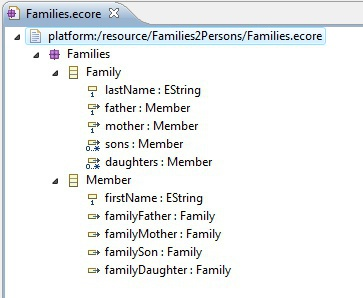
And here we are with the metamodel for our families!
The principle is the same for the target metamodel, in less complicated. Open the Persons.ecore file, and name the root child node to "Persons". Then add it a class "Person", with one attribute: "fullName" of EType EString and multiplicity 1..1.
Then set the Abstract attribute of the Person class to "true". We need to do this because we won't directly implement this class, but two other subclasses: "Male" and "Female", according to who was the person in the family, a man or a woman. Create these two classes at the same level than Person. We make them subclasses of Person by setting their ESuper Types property to Person.
<?xml version="1.0" encoding="ISO-8859-1"?>
<xmi:XMI xmi:version="2.0"
xmlns:xmi="http://www.omg.org/XMI" xmlns:xsi="http://www.w3.org/2001/XMLSchema-instance"
xmlns:ecore="http://www.eclipse.org/emf/2002/Ecore">
<ecore:EPackage name="Persons">
<eClassifiers xsi:type="ecore:EClass" name="Person" abstract="true">
<eStructuralFeatures xsi:type="ecore:EAttribute" name="fullName" ordered="false"
unique="false" lowerBound="1" eType="ecore:EDataType http://www.eclipse.org/emf/2002/Ecore#//EString"/>
</eClassifiers>
<eClassifiers xsi:type="ecore:EClass" name="Male" eSuperTypes="#/0/Person"/>
<eClassifiers xsi:type="ecore:EClass" name="Female" eSuperTypes="#/0/Person"/>
</ecore:EPackage>
</xmi:XMI>
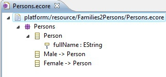
And our second metamodel is ready!
Now that we have represented what we have (Families, the source) and what we want to obtain (Persons, the target), we can concentrate on the core of the transformation: the ATL code. This code is going to match a part of the source with a part of the target.
What we want in our example, is to take each member of each family, and transform him into a person. That implies melting his first and last name to have a full name, defining whether it's a man or a woman, and copy these pieces of information into a Person object.
We first need a file to put this code into. So create a new ATL file, by going to File > New > Other..., and then ATL > ATL File.
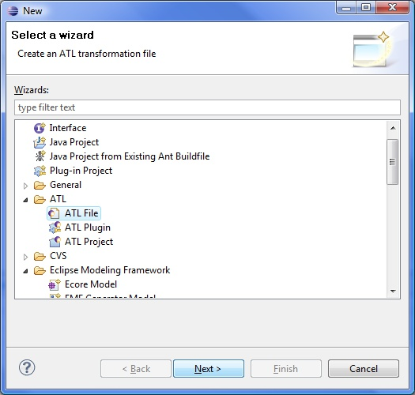
Name it "Families2Persons.atl" for instance, don't forget to select your project, and then click Finish.
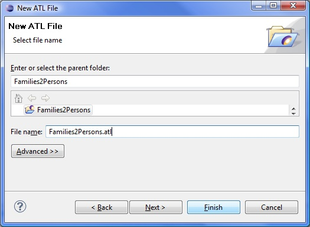
If you are asked to open the ATL perspective, click Yes.
When you open the file, an error is marked (we will see how to fix it below), and it contains a single line:
module Families2Persons;
First we add two lines at the top of the file, one for each metamodel, so that the editor can use the auto-completion and documentation when we type in some code concerning the two metamodels:
-- @path Families=/Families2Persons/Families.ecore -- @path Persons=/Families2Persons/Persons.ecore
Then we tell ATL that we have families in and we want persons out (this should fix the error):
create OUT: Persons from IN: Families;
Now we must define some helpers:
helper context Families!Member def: isFemale(): Boolean = if not self.familyMother.oclIsUndefined() then true else if not self.familyDaughter.oclIsUndefined() then true else false endif endif;
helper context Families!Member def: familyName: String = if not self.familyFather.oclIsUndefined() then self.familyFather.lastName else if not self.familyMother.oclIsUndefined() then self.familyMother.lastName else if not self.familySon.oclIsUndefined() then self.familySon.lastName else self.familyDaughter.lastName endif endif endif;
These helpers will be used in the rules that we will see below.
And finally, we add two rules creating male and female persons from members of families:
rule Member2Male {
from
s: Families!Member (not s.isFemale())
to
t: Persons!Male (
fullName <- s.firstName + ' ' + s.familyName
)
}
rule Member2Female {
from
s: Families!Member (s.isFemale())
to
t: Persons!Female (
fullName <- s.firstName + ' ' + s.familyName
)
}
Each rule will be called on the object that respect the filter predicate in the from part. For instance, the first rule takes each member of each families ( from s: Families!Member) that is not a female (using the helper we described above, not s.isFemale()). And then it creates a male person ( to t: Persons!Male) and set its fullName attribute to the first name of the member followed by its last name (using the helper familyName we saw above). The principle is the same for the second rule, whereas this time it takes only the female members.
You can download the entire file here.
Note that the ATL editor provides syntax highlighting, and indentation much better than what you can see above. Besides, you can find help on what we saw above on the User Guide, here and here.
The transformation is ready to be used, we just need a sample model to run it on. First create a file in your project in which we will put the code of the model. Go to File > New > File
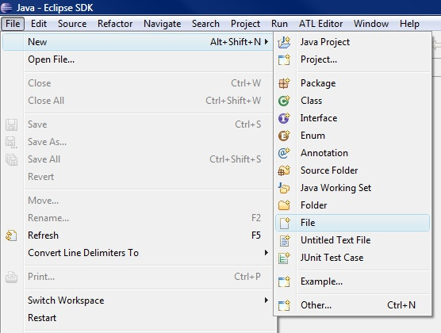
name it "sample-Families.xmi" for instance

and open it with a text editor. Here is some code sample:
<?xml version="1.0" encoding="ISO-8859-1"?> <xmi:XMI xmi:version="2.0" xmlns:xmi="http://www.omg.org/XMI" xmlns="Families"> <Family lastName="March"> <father firstName="Jim"/> <mother firstName="Cindy"/> <sons firstName="Brandon"/> <daughters firstName="Brenda"/> </Family> <Family lastName="Sailor"> <father firstName="Peter"/> <mother firstName="Jackie"/> <sons firstName="David"/> <sons firstName="Dylan"/> <daughters firstName="Kelly"/> </Family> </xmi:XMI>
We have everything we need to make the transformation, but there is one more step before we launch it, at least the first time: we have to configure the launching.
When you are in the ATL file (Families2Persons.atl), click on Run > Run (or Ctrl+F11)
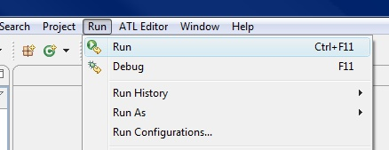
A dialog opens. Several pieces of information are already filled in: the ATL module (our transformation file, Families2Persons.atl), the metamodels ( Families.ecore and Persons.ecore), but we need to complete the page.
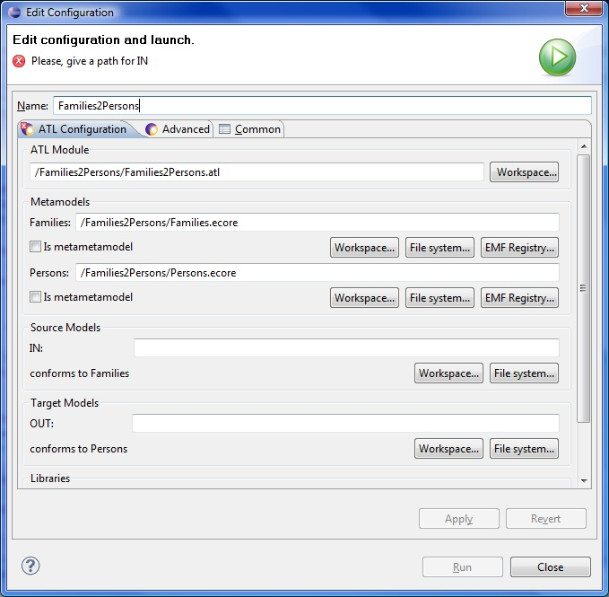
The Source Models (IN:, conforms to Families) part is the model we want to transform, that is to say our sample-Families.xmi; browse the workspace to add it.
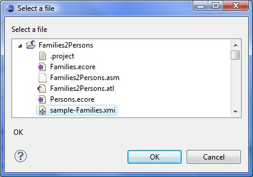
The Target Models (Out:, conforms to Persons) part is the model to be generated; browse the workspace to find your project and enter a name for the file (say "sample-Persons.xmi").
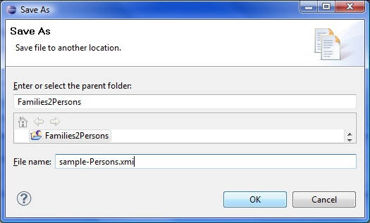
A useful option can be found in the Common tab of the page: we can save our configuration so that ATL can find it the next time we would want to run it or if the project is exported. If you check Shared file and browse within your project, you can save this configuration in a file ("Families2Persons.launch" for example).
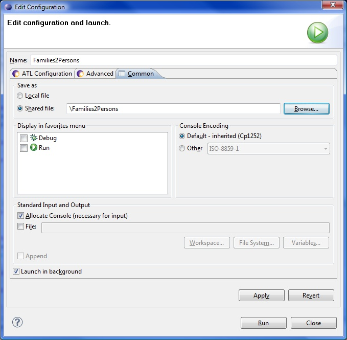
The launch configuration file can be found here
You can found help on how to compile an ATL file on the User Guide, here.
At last we can run the transformation by clicking Run on the configuration page. A file is then generated, named sample-Persons.xmi, and containing the list of your family members transformed into persons.
Here is what you should get if you open it with a text editor:
<?xml version="1.0" encoding="ISO-8859-1"?> <xmi:XMI xmi:version="2.0" xmlns:xmi="http://www.omg.org/XMI" xmlns="Persons"> <Male fullName="Jim March"/> <Male fullName="Brandon March"/> <Male fullName="Peter Sailor"/> <Male fullName="David Sailor"/> <Male fullName="Dylan Sailor"/> <Female fullName="Cindy March"/> <Female fullName="Brenda March"/> <Female fullName="Jackie Sailor"/> <Female fullName="Kelly Sailor"/> </xmi:XMI>
Running an ATL launch configuration is explained on the User Guide, here
This is the end of this basic example. Further documentation, examples, and help can be found on the ATL website: http://www.eclipse.org/m2m/atl/.
|
|

|
|
| Introduction | Updating This Document |